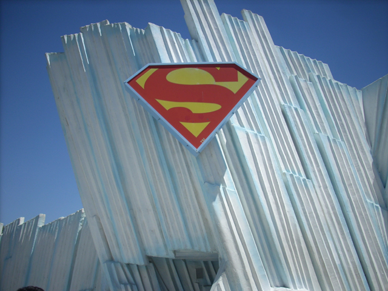
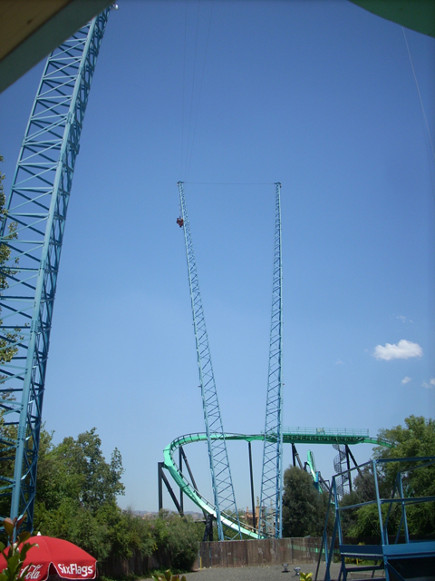
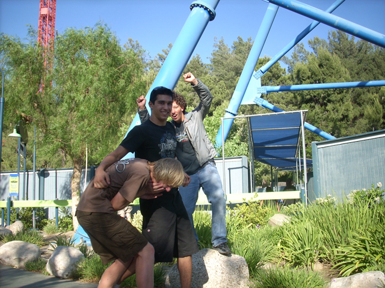

16th Bday Party
Do you see this? This is my Six Flags Magic Mountain Season Pass.
Today, I hit an all time new low in Stupidity. I FORGOT MY F**KING SEASON PASS TODAY!!!!!!!!!!!!!
Anyways, here we are at Six Flags Magic Mountain for the day.

Suprisingly, Superman only had a 5 min wait! And we'd be cooled off by Supermans line during those 5 minutes. (It was 100 degrees today.)
This is the proper way to ride Superman.
After the all the Backstage Tours, Night ERT, and Free Doughnuts they gave us, the least we can do to thank SFMM is to follow the rules.
"YES!!!!!! I HAVE DEFEATED SPIN OUT!!!!!! IT WILL MAKE ME SICK NO MORE!!!!!!!!!!"
This would be Alisa's first time on Dive Devil.

You see me and Cody up there? We hung there for 5 extra seconds.
"I FLY LIKE A BIRD!!!!!!!!!!!!!!"
That was SO not worth $30.00! To see the footage I got of us on Dive Devil, click here.
The chilli on that hot dog looks an awful lot like s**t.
Cody:"When this thing starts to pick up speed, I'm going to sit Blackpool Pleasure Beach Style." Alisa: "OMG! Cody's going to freaking die!" Issac: "I hope I don't get sick on this ride."
 Goldrusher was decent today.
Goldrusher was decent today.
We ate lunch at the Mooseburger Lodge. By the way, that moose seems very metalish.
One of these idiots broke his camera, One of these idiots forgot his season pass, and One of these idiots got sick on Atom Smasher. Try and tell which is which.
"I KNOW I FORGOT MY DAMN SEASON PASS, BUT VIOLENCE IS NOT THE ANSWER!!!!!!"
Hey Andrew, Sorry you got sick today. To show that we still remember you, we rode the pirate ship for you.
Hey Look! Superman got Stuck!!! HA HA!!! Good thing we rode it this morning.
 We had an Epic ride on Goliath today.
We had an Epic ride on Goliath today.
Who the hell gave this freak caffine? This isn't going to end well.
Alisa and Isaac reveal their true identitys!
We're so cheap that we're sharing a foot vibrator.
Canyon Blaster is a definite "HELL NO!" for today.
We all belong on the short bus.
I think the biggest mystery to all of us is why the short bus is so small!
I have a problem with Myspace.
And once again, F**king Cody broke his camera. AGAIN!!!!!
Here he is trying to fix the damage. To see Cody try and fix his camera,click here.
As you can see, the damage from this is way worse than the damage from the Basketball Incident.
Looks like the X sign has joined the collection of peices from stupid old attractions.

I don't want to figure it out.
 Time for our last coaster of the day. Might as well make it a good one.
Time for our last coaster of the day. Might as well make it a good one.
 But for some reason, the Single Riders Line was really long. I wonder why?
But for some reason, the Single Riders Line was really long. I wonder why?
 I wasn't too impressed with the Riddlers Revenge today. While they wern't nearly as bad as the Millenium Force crew, they just seemed much better 3 weeks ago.
I wasn't too impressed with the Riddlers Revenge today. While they wern't nearly as bad as the Millenium Force crew, they just seemed much better 3 weeks ago.
So THAT'S why the single riders line was so crowded!! DAMMIT MAGIC MTN!!!
Home